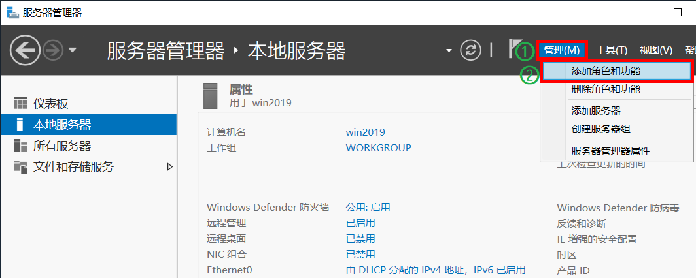
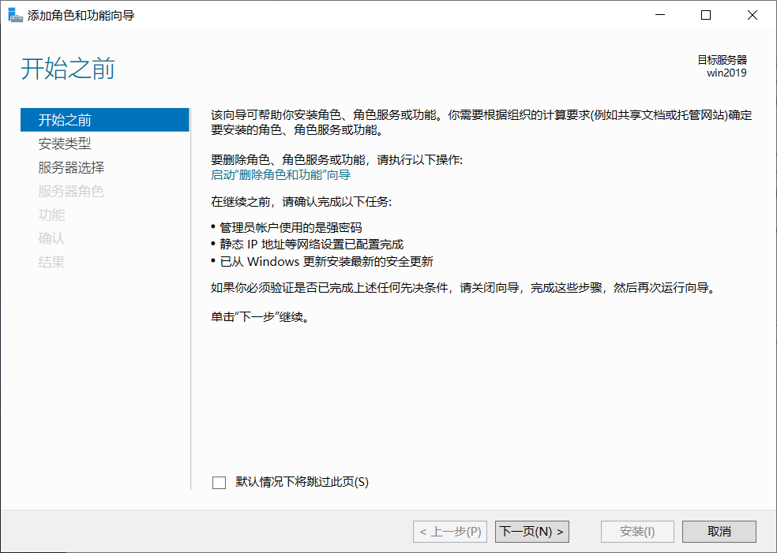
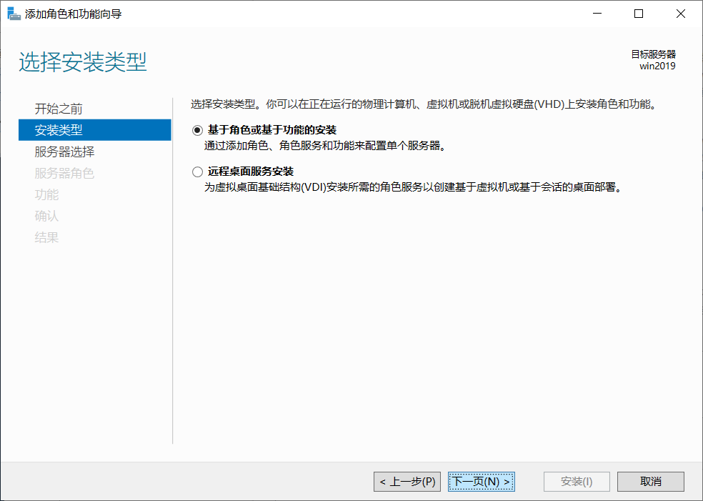
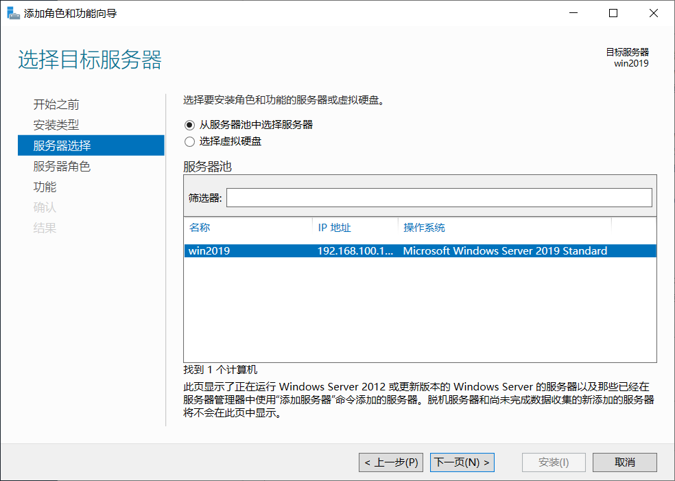

<!DOCTYPE html>
<html lang="zh-cn">
<head>
	<meta charset="UTF-8">
	<meta http-equiv="X-UA-Compatible" content="IE=edge,chrome=1">
	<link rel="icon" href="../../../img/nps.png"/>
	<title>NPS，微软Radius服务</title>
	<script type="text/javascript" src="../../../js/head.js"></script>
	<script type="text/javascript">
		window.onload = createNavigation(nps);
	</script>
</head>
<body>
	<div class="container-fluid">
		<div id="divCommand">
			<script type="text/javascript">
				createInstruT0("安装NPS", "i1");
					createInstruT1("安装NPS", "i1-1");
						document.writeln(
							"<div class='divConfigImgT1'>" +
								"<br /><br />" +
								"<br /><br />" +
								"<br /><br />" +
								"<br /><br />" +
							"</div>"
						);
						createConfigImgT1("i1_1$1~7");

					createInstruT1("主机防火墙放行radius流量", "i1-2");
						createInstruAllTopT1("系统自带的策略无效，需要手动放行radius流量");
						createConfigImgT1("i1_2$1");

				createInstruT0("查看日志", "i2");
					createInstruAllTopT0("通过windows管理工具的 ’事件查看器。 ，查看 ’网络策略和访问服务。 日志<br />");
					createConfigImgT0("i2$1");

				createInstruT0("初始化配置", "i3");
					createConfigImgT0("i3$1~14");

				createInstruT0("配置测试连通性的策略", "i4");
					createConfigImgT0("i4$1~15");

				createInstruT0("配置授权条件", "i5");
					createInstruT1("基于组", "i5-1");
						createConfigImgT1("i5$0");
						createConfigImgT1("i5_1$1");
						createConfigImgT1("i4$4~7");
						createConfigImgT1("i5_1$8");

					createInstruT1("基于SSID", "i5-2");
						createInstruAllTopT1("属性值为 .*:“SSID。，如：.*:itachi-PEAP，itachi-PEAP 为SSID");
						createInstruAllTopT1(".* 代表连接AP的mac地址");
						createInstruAllTopT1("配置属性值的依据在windows日志");
						createConfigImgT1("i5$0");
						createConfigImgT1("i5_1$1");
						createConfigImgT1("i5_2$1~4");

					createInstruT1("基于EAP类型：PEAP/EAP-TLS", "i5-3");
						createInstruAllTopT1("’PEAP。 对应：　　 受保护的EAP（PEAP）");
						createInstruAllTopT1("’EAP-TLS。 对应：智能卡或其它证书");
						createConfigImgT1("i5$0");
						createConfigImgT1("i5_3$1~4");

				createInstruT0("配置授权结果", "i6");
					createInstruT1("授权vlan（vlan pool）", "i6-1");
						createInstruAllTopT1("需要被授权的属性：");
						createInstruAllTopT1("　　(064)’Tunnel-Type。：　　　　　　　　　 指定为VLAN，或数值13");
						createInstruAllTopT1("　　(065)’Tunnel-Medium-Type。：　　 指定为802，或数值6");
						createInstruAllTopT1("　　(081)’Tunnel-Private-Group-ID。：vlan ID 或 vlan pool 名称");
						createConfigImgT1("i6$0");
						createConfigImgT1("i6_1$1~13");

					createInstruT1("授权ACL，ACL位置无线控制器", "i6-2");
						createInstruAllTopT1("需要被授权的属性：(011)’Filter-Id。");
						createConfigImgT1("i6$0");
						createConfigImgT1("i6_2$1~5");


			</script>
		</div>
	</div>
</body>
</html>